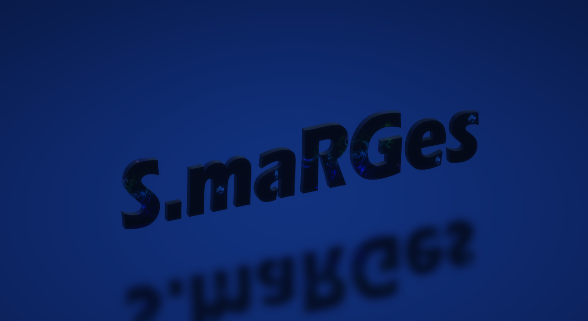

Я Сергей Маренин (Россия)
I am Sergey Marenin (English)
soy Sergei marenin (Español)
sono Sergei marenin (Italiano)
나는 세르게이 마레닌 (한국어)
Я Сергій Маренін (Український)
ВК Геймера
Ге́ймер (gamer с англ. — «игрок») —человек, играющий в видеоигры, хотя сначала геймерами называли тех, кто играет только в ролевые или военные игры. Геймеры считаются новой субкультурой, и вошли в этот список в 2013 году, после признания киберспорта.
Сдесь я хочу рассказать про лучшие проекты (геймнга) которые я прохдил
1.Resident Evil 2 remake — компьютерная игра в жанре survival horror, разработанная Capcom R&D Division 1 и изданная Capcom 25 января 2019 2.Horizon Zero Dawn — (с англ. — «Горизонт: Новый Рассвет») — компьютерная игра в жанре Action/RPG с открытым миром, разработанная нидерландской студией Guerrilla Games и изданная Sony Interactive Entertainment для игровой консоли PlayStation 4 в 2017 году; версия игры для Windows вышла 7 августа 2020 года[3].3.Grand Theft Auto Vмультиплатформенная компьютерная игра в жанре action-adventure с открытым миром, разработанная компанией Rockstar North и изданная компанией Rockstar Games. Изначально игра была выпущена для игровых консолей PlayStation 3 и Xbox 360 в 2013 году, в 2014 году переиздана для PlayStation 4 и Xbox One, в 2015 году для Windows и в 2022 году для PlayStation 5 и Xbox Series X/S. Является пятнадцатой по счёту игрой серии Grand Theft Auto и следующей крупной игрой после Grand Theft Auto IV, выпущенной в 2008 году[9]. В России и СНГ издателем Grand Theft Auto V выступает компания 1С-СофтКлаб.4.The Walking Dead: The Game (также известная как The Walking Dead: Season One) —эпизодическая графическая приключенческая игра по мотивам комикса Роберта Киркмана «Ходячие мертвецы». Игра разработана и издана студией Telltale Games[7]. Изначально выход планировался на последние месяцы 2012 года[8]. Позже релиз The Walking Dead: The Game перенесли на 24 апреля 2012 года (США)[9]. Игра выпущена в формате 5 эпизодов, выходящих с интервалом в один-два месяца, и дополнительным 6 эпизодом, выход которого состоялся 3 июля 2013. На территории России и стран СНГ игра официально не издавалась.5.Dead Space 2 (произносится [dɛd speɪs tuː], англ. Мёртвый Космос 2) —компьютерная игра, шутер от третьего лица в жанре survival horror, продолжение оригинальной игры Dead Space, созданная студией Visceral Games[12] и выпущенная издателем Electronic Arts в начале 2011 года. Локализация русской версии игры реализована через субтитры[13][14].
Оценки этих игр на метакритик и мои личные
Метакритик:
- Resident Evil 2 remake: 82-метаоценка 8.5-Оценка пользователей
- Grand Theft Auto V: 96-метаоценка 7.8-Оценка пользователей
- The Walking Dead: Season One: 89-метаоценка 8.8-Оценка пользователей
- Horizon Zero Dawn: 84-метаоценка 6.9-Оценка пользователей
- Dead Space 2: 86-метаоценка 8.3-Оценка пользователей
Мои личные отценки:
- Resident Evil 2 remake-9.0
- Grand Theft Auto V-9.0
- The Walking Dead: Season One-9.0
- Horizon Zero Dawn-9.0
Игры которым тоже не мешало бы уделить внимание:
| Игра |
Личная отценка |
Метакритик |
| S.T.A.L.K.E.R.: Тень Чернобыля |
8.5 |
META-82; USER-8.4 |
| Fallout 3 |
8.5 |
META-91; USER-7.9 |
| Метро 2033 |
8.5 |
META-81; USER-8.1 |
| Battlefield 1 |
8.0 |
META-88; USER-7.2 |
| Mafia II |
8.5 |
META-77; USER-8.3 |
Опрос для геймеров